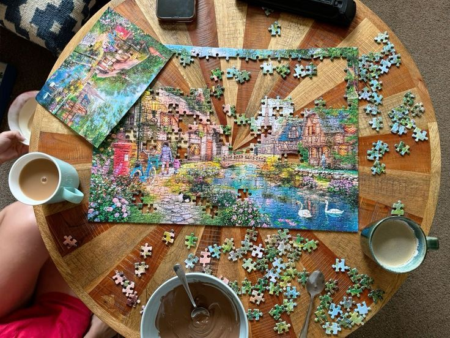
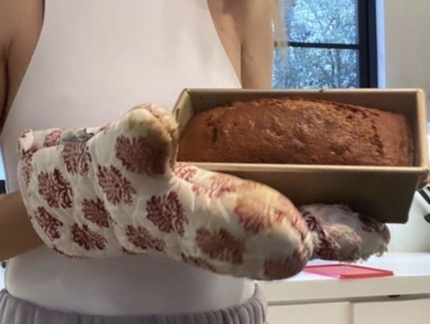
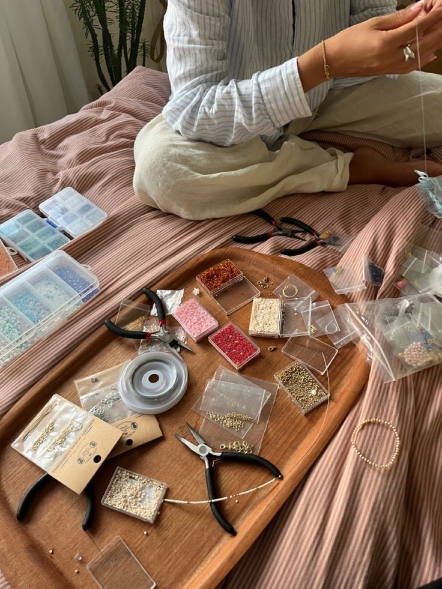
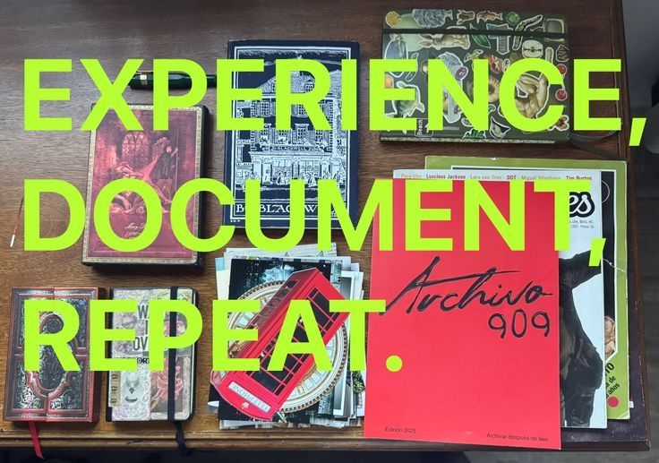
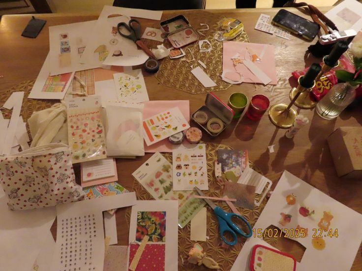
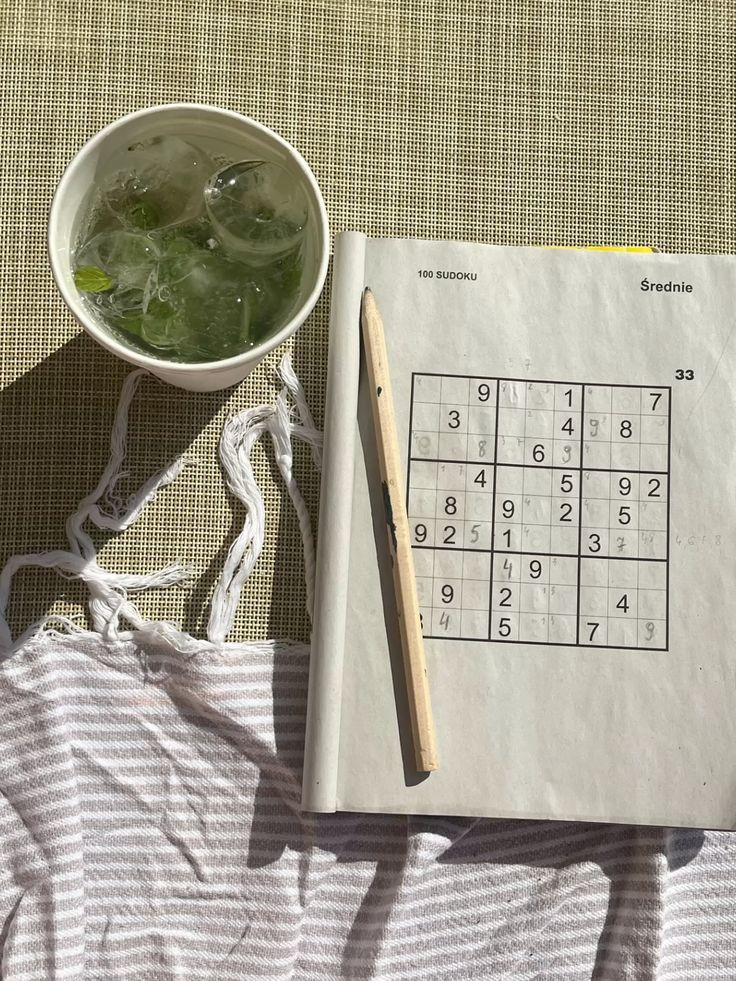
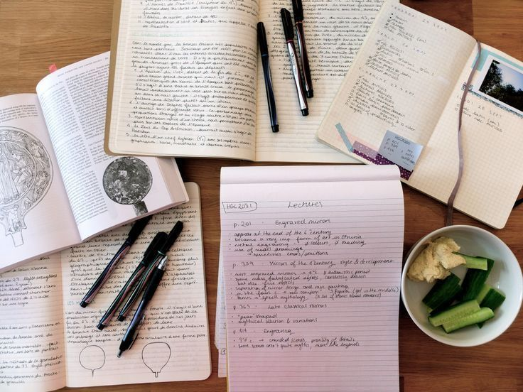
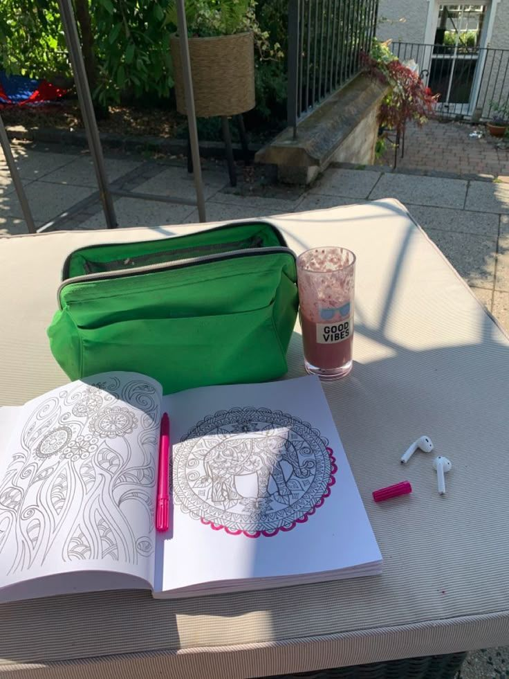
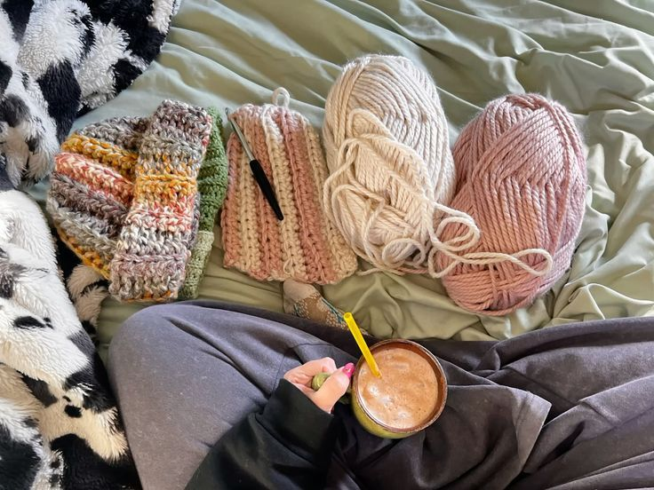

hobbies para dejar el SCROLLING 𓂃 ོ☼𓂃
no hay que mentirnos, el 90% de nuestro tiempo nos la pasamos pasando y pasando vídeos en TikTok que solo nos hacen perder nuestro tiempo (y perder su propia noción). y para nadie tampoco es un secreto que hasta nos cansamos de solo consumir contenido para NADA interesante.
así que, ¿por qué solo consumir cuando también puedes crear, hasta solo para ejercitar un poco esa creatividad? ;)
por ello te dejo un par de hobbies que he estado haciendo últimamente y me encantaría que los intentaras también…

ROMPECABEZAS
si lo haces con amigos es SUUPER divertido. busca ese rompecabezas viejo que llevas años sin armar y crea un espacio de risas con un poco de concentración.

HORNEAR o cocinar
esto es super terapéutico. en lo personal no me gustaba para NADA cocinar cualquier cosa, pero me aparecieron muchas recetas que moría por probar y por recetarios que me regaló mi abuela y se ha vuelto una de mis actividades favoritas después de intentarlo.

CREAR PULSERAS
principalmente lo había iniciado para un emprendimiento. ME ENGANCHÉ, puedes pasar horas haciendo pulseritas, collares, lo que sea, solo escuchando música o charlando y es GENIAL. además que lo haces como tú quieras y con tu propio estilo.

DOCUMENTAR
esto es super genial porque hasta en tu propio journal o en tu propia cuenta de vídeos puedes documentar a tu preferencia distintas experiencias que vivas. ese viaje, esa salida con amigas, ese hobbie que aprendiste y más….

JUNK JOURNAL
aquí puedes DECORAR como tú quieras tu journal o junk journal con un montón de cosas a manera de recuerdo. ejemplo, ese ticket del cine, una foto impresa con tus amigas, hacer un collage de cosas que te gustan.

SUDOKU
no subestimen el sudoku, puede ser adictivo. por lo general me aburría un montón los juegos mentales (digámosle así) pero lo descargué para jugarlo mientras voy en el bus para mi uni y ME ENCANTÓ, pasas el tiempo super rápido y se vuelve divertido. y más cuando creas tus propios récordsss.

TOPIC MONTH
esta es una actividad SUUPER COOL. básicamente eliges un tema EL QUE TÚ QUIERAS al mes e investigas lo más que puedas, así aprendes algo nuevo y puedes desenvolverte en conversaciones sobre lo que sea. (a este punto te puedo hablar TODO sobre las abejas.)

PINTAR
no solo pintar en una hoja en blanco es aceptable. me compré un libro de mándalas y ya estoy que me compro otro, hasta puedes hacerlas tú, por ponerte un ejemplo. es suuper relajante si me preguntas.

CROCHET
actividad que principalmente inicié para complacer a mi abuela que es amante del crochet y se volvió una de mis favoritas. sobre todo porque paso tiempo con ella siendo mi maestra. y por supuesto es increíble, puedes hacer hasta TOPSSS. queee.